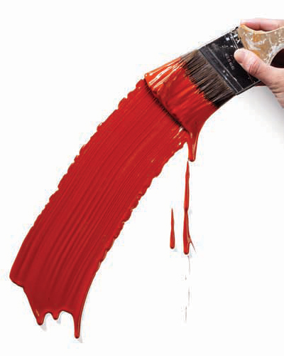

#1: Detect and diagnose
When you examine the condition of the surface you plan to paint, pay close attention to the signs and the appearance of finish failure. Is loose paint forming blisters, or does it look cracked? Is the finish peeling only as deep as the previous film (a possible adhesion problem) or all the way to the substrate (an indication of a moisture problem)? Is fading a normal loss of color, or is the surface chalking? In the places that appear dirty, is it actually mold? All of these conditions need to be cleaned and/or repaired, but first you should study them for possible clues to an underlying problem, such as leaks, condensation or poor surface preparation.
#2: Mix it up
For any project involving multiple gallons of paint or stain, always combine the entire lot in a large, clean container and then pour the blended material back into the original buckets. Otherwise, slight shading differences from one batch to the next can be especially obvious on exterior surfaces — thanks to abundant lighting and the grand, stand-back-and-look perspective.
#3: Mind the ups and downs
Although it seems backward, when washing vertical surfaces (walls, cladding, window trim, etc.) you should start from the bottom and work up. This approach helps to prevent streaks from drips. Be sure to complete an entire plane in one session, and before the surface dries, rinse from the top down. When it’s time to paint (only after the surface is dry) start at the top and work down so you can brush out any drips.
#4: Get the timing right
Timing is everything, and primer coats aren’t in their prime forever. Factory-primed doors and siding, for example, must be painted within 30 to 180 days, depending on the product. For best adhesion and durability, follow the manufacturer’s instructions. Other time-sensitive factors to keep in mind:
- Stain or prime and paint bare wood immediately after installation. Pressure-treated wood should be finished when drips of water do not bead on the surface. That may be in a month — or it may be today.
- Don’t paint too early in the morning; wait until grass is dry. Never coat the sunny side during midday or an unshaded west side in the afternoon.
- Remove masking tape as soon as possible — especially if it’s exposed to sunlight.
- Don’t stop applying finish in the middle of a surface; work quickly to keep a wet edge.
- Allow time between coats for complete drying.
- Don’t wait too long before the next refinishing — you’ll have more surface-prep work to do, and the substrate could deteriorate if the finish wears off.
#5: Respect the elements
Atmospheric conditions really do matter. Believe the label’s instructions, which prescribe limits on humidity and on the surface and air temperatures. There is a science to all of it: For example, when an uncured finish is exposed to frigid temperatures, the liquids may crystallize before the coating dries, which can affect the paint’s adhesion as well as its appearance. And painting while the surface is in direct sunlight can cause wrinkles in the finish or premature fading of color and loss of sheen.
#6: Be safe
The potential for overheating and the perils of windy weather are hazards you need to consider when planning an exterior painting project. If you must work in high places (anywhere over your head), be sure you’re not in over your head. Rent reliable ladders, scaffolding or lifts. For the really risky stuff, hire professionals who are insured and bonded.
Know the outdoor humidity level: 50 percent is ideal. If it’s higher, the coating doesn’t cure properly; if it’s too low, the finish dries too quickly, which can result in blisters. Too much wind can have the same results — and it can deposit debris on the surface. Also be aware of the potential dangers involved in removing old paint. Recently escalated concerns about lead in pre-1978 finishes have resulted in stiff requirements for contractors (of any type) who work on older homes. To protect themselves and their families, homeowners should follow the same precautions.
#7: Get technical
Like the pros, you too can access valuable information from the manufacturer’s technical data sheet (TDS) for any product you’re using. This is especially helpful if you’re working with a finish for the first time. Visit the company’s Web site or enter “TDS” and the product name in a search engine. Some of the TDS stats that matter to you are:
- limitations and recommended uses and applications
- the product’s drying process (by evaporation, coalescence or oxidation)
- the best drying temperatures and various drying times
- technical assistance resources.

#8: Keep coats light
Nobody likes wrinkles, drips or sagging. To avoid these eyesores on your home’s exterior, resist the temptation to get by with one thick layer of paint. Instead, apply two lighter coats, making sure that the first one is completely coat may look smooth initially — it may even seem to hide surface blemishes or cracks. But sags and wrinkles appear over time (not unlike those we see in the mirror).
Back to Basics
For review, here are five premises every wise painter follows:
- Use the right type of finish for the job (interior for interior and exterior for exterior, stain or paint, oil or latex), and always choose high-quality products.
- Use the right primer: Different formulas serve different purposes, so choose accordingly.
- Buy a sample of the color you plan to use and paint a significant area so you can view it in various light conditions. (Don’t trust a small chip.)
- Be picky about tools — they make work easier and produce better results. Again, you get what you pay for.
- Preparation is key. Surfaces must be clean, dry and sound.
 Static Content for Story Detail is ready.
Static Content for Story Detail is ready.